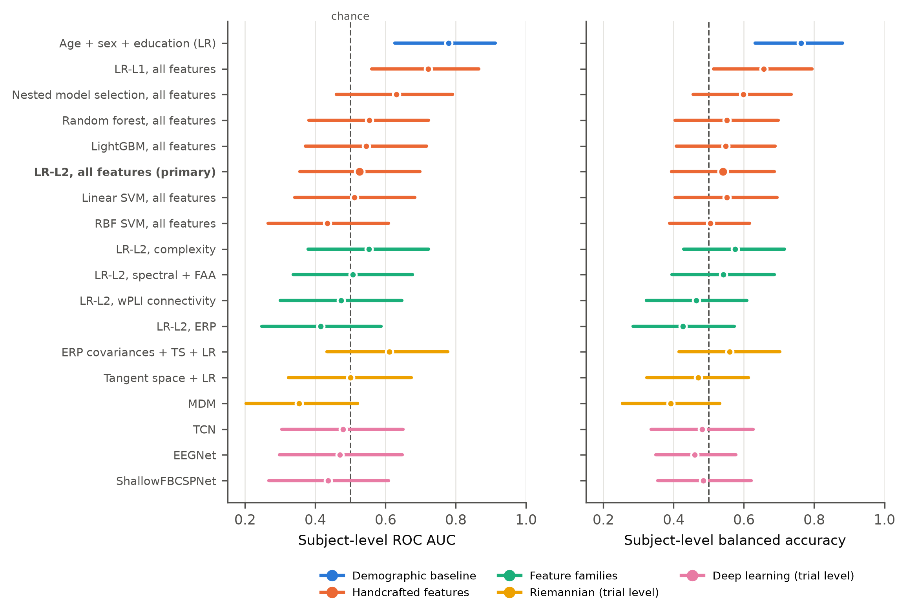
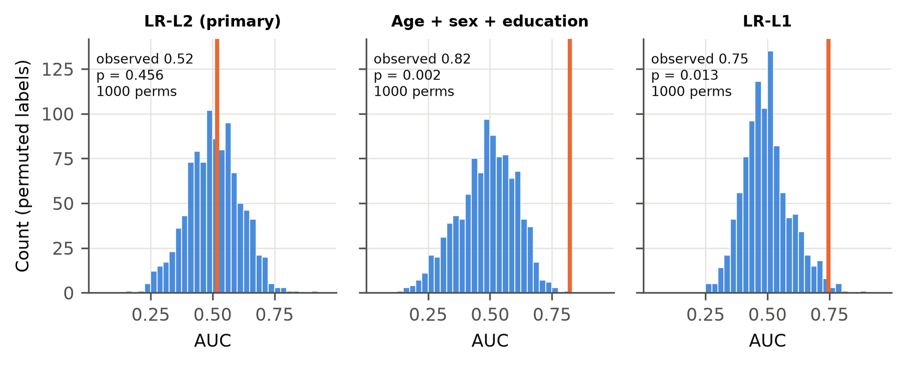
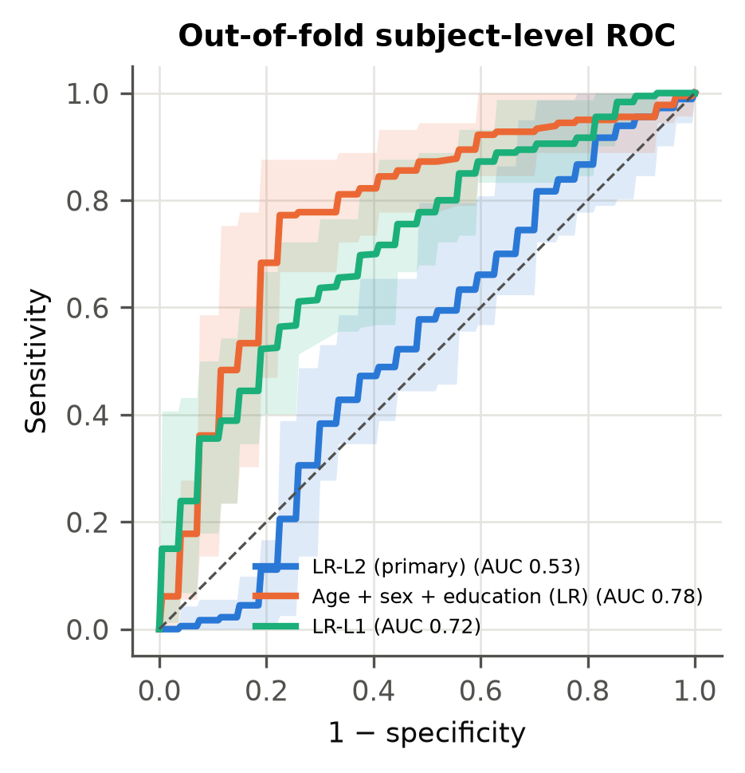
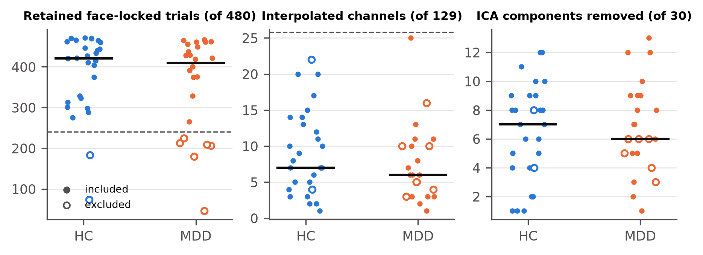
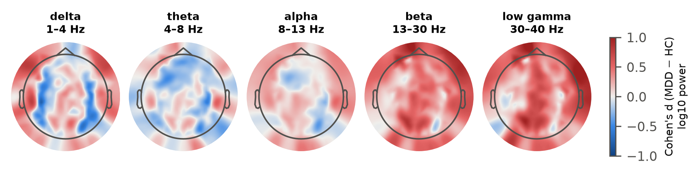
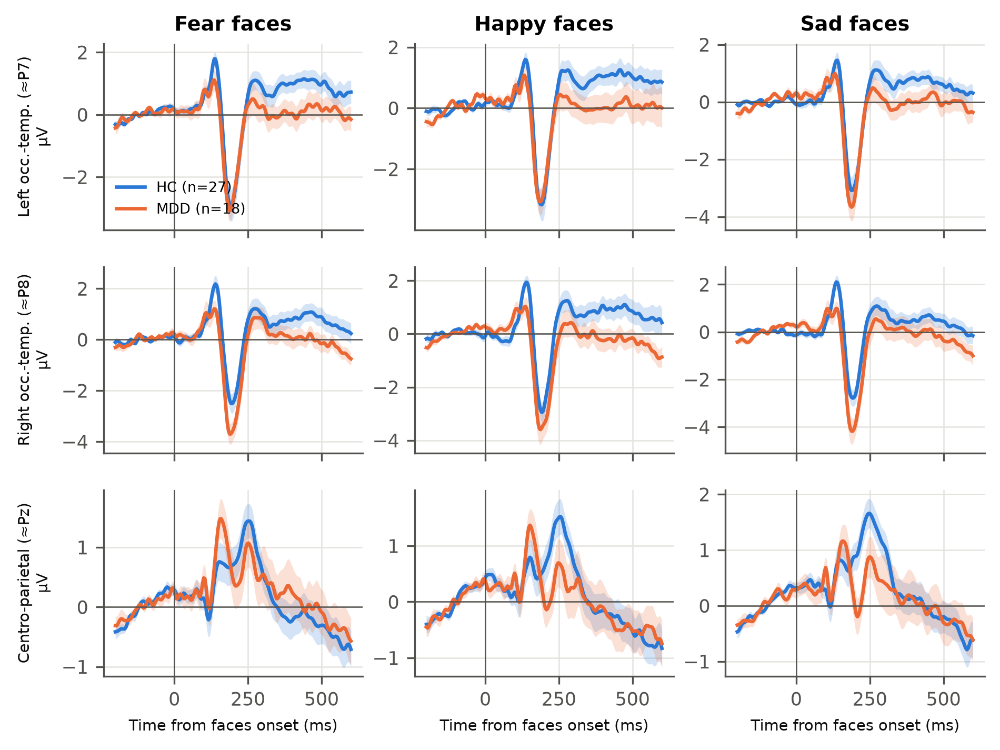
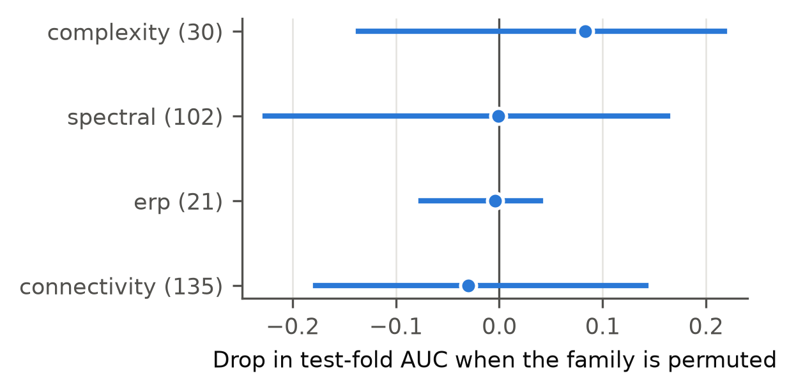
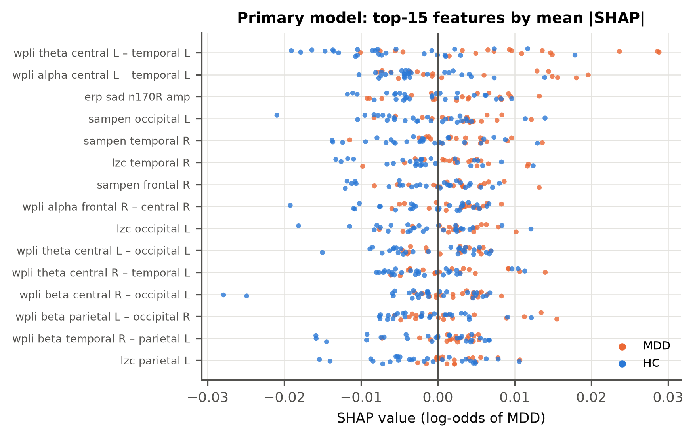

Main results#
All metrics are per participant, with 45 participants (18 MDD, 27 HC). The 95% CIs come from a participant bootstrap, and the \(p\)-values from label permutation of the full nested pipeline. The deep networks were run with 3 repetitions and no permutation test, for computational reasons.
Model |
Family |
AUC [95% CI] |
Balanced acc. [95% CI] |
p (perm.) |
Repeats |
|---|---|---|---|---|---|
Age + sex + education (LR) |
Demographic baseline |
0.78 [0.63, 0.91] |
0.76 [0.63, 0.88] |
0.002 |
10 |
LR-L1, all features |
Handcrafted features |
0.72 [0.56, 0.87] |
0.66 [0.51, 0.79] |
0.013 |
10 |
Nested model selection, all features |
Handcrafted features |
0.63 [0.46, 0.79] |
0.60 [0.46, 0.74] |
0.080 |
10 |
Random forest, all features |
Handcrafted features |
0.55 [0.38, 0.72] |
0.55 [0.40, 0.70] |
0.348 |
10 |
LightGBM, all features |
Handcrafted features |
0.55 [0.37, 0.72] |
0.55 [0.41, 0.69] |
0.353 |
10 |
LR-L2, all features (primary) |
Handcrafted features |
0.53 [0.36, 0.70] |
0.54 [0.39, 0.69] |
0.456 |
10 |
Linear SVM, all features |
Handcrafted features |
0.51 [0.34, 0.68] |
0.55 [0.40, 0.69] |
0.479 |
10 |
RBF SVM, all features |
Handcrafted features |
0.43 [0.27, 0.61] |
0.50 [0.39, 0.62] |
0.572 |
10 |
LR-L2, complexity |
Feature families |
0.55 [0.38, 0.72] |
0.57 [0.43, 0.72] |
0.705 |
10 |
LR-L2, spectral + FAA |
Feature families |
0.51 [0.34, 0.68] |
0.54 [0.40, 0.69] |
0.325 |
10 |
LR-L2, wPLI connectivity |
Feature families |
0.47 [0.30, 0.65] |
0.46 [0.32, 0.61] |
0.768 |
10 |
LR-L2, ERP |
Feature families |
0.42 [0.25, 0.59] |
0.43 [0.28, 0.57] |
0.720 |
10 |
ERP covariances + TS + LR |
Riemannian (trial level) |
0.61 [0.43, 0.78] |
0.56 [0.42, 0.70] |
0.159 |
10 |
Tangent space + LR |
Riemannian (trial level) |
0.50 [0.32, 0.67] |
0.47 [0.32, 0.61] |
0.532 |
10 |
MDM |
Riemannian (trial level) |
0.35 [0.20, 0.52] |
0.39 [0.25, 0.53] |
0.891 |
10 |
TCN |
Deep learning (trial level) |
0.48 [0.30, 0.65] |
0.48 [0.34, 0.63] |
not run |
3 |
EEGNet |
Deep learning (trial level) |
0.47 [0.30, 0.65] |
0.46 [0.35, 0.58] |
not run |
3 |
ShallowFBCSPNet |
Deep learning (trial level) |
0.44 [0.27, 0.61] |
0.48 [0.35, 0.62] |
not run |
3 |
How to read this table#
The primary model (LR-L2, all features) was fixed before any result existed, and it is at chance.
L1-LR is the only nominally significant secondary model. It does not survive multiplicity correction, and nested model selection, the honest estimate of “pick the best”, falls to 0.63, with a CI that includes chance.
The demographic baseline is the strongest model. It reflects recruitment (hospital patients versus controls recruited by posters, with a three-year education gap), not a diagnostic signal.


Fig. 2 Participant-level AUC with 95% bootstrap CIs for all models.#


Fig. 3 Permutation null distributions of the participant-level AUC, with the observed AUC marked.#


Fig. 4 Participant-level ROC curves.#
Signal quality and neurophysiology (descriptive)#


Fig. 5 Signal-quality measures by group.#


Fig. 6 Band-power topographies by group.#


Fig. 7 Grand-average ERPs by group and condition.#


Fig. 8 Permutation importance of whole feature families, on the test folds of the primary model.#


Fig. 9 SHAP values of the primary model (descriptive).#